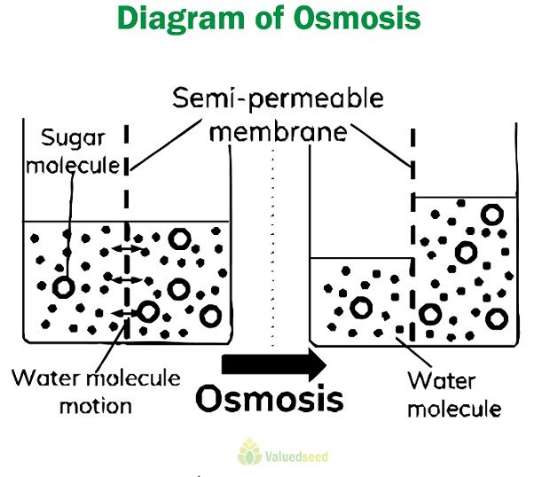

💧 Osmosis
The movement of water molecules through a selectively permeable membrane.
Definition
Osmosis is the movement of water molecules from a region of higher water concentration (or lower solute concentration) to a region of lower water concentration (or higher solute concentration) through a selectively permeable membrane.

Conditions Required for Osmosis
- A selectively permeable membrane must be present.
- There should be a difference in water concentration on the two sides of the membrane.
- Only water molecules can pass through the membrane.
Examples of Osmosis
- Roots absorb water from the soil.
- Raisins swell when placed in water.
- Red blood cells change shape in different solutions.
- Plant cells maintain their turgidity through osmosis.
Importance of Osmosis
- Helps plants absorb water from the soil.
- Maintains the shape of plant cells.
- Regulates water balance in living organisms.
- Essential for many biological processes.